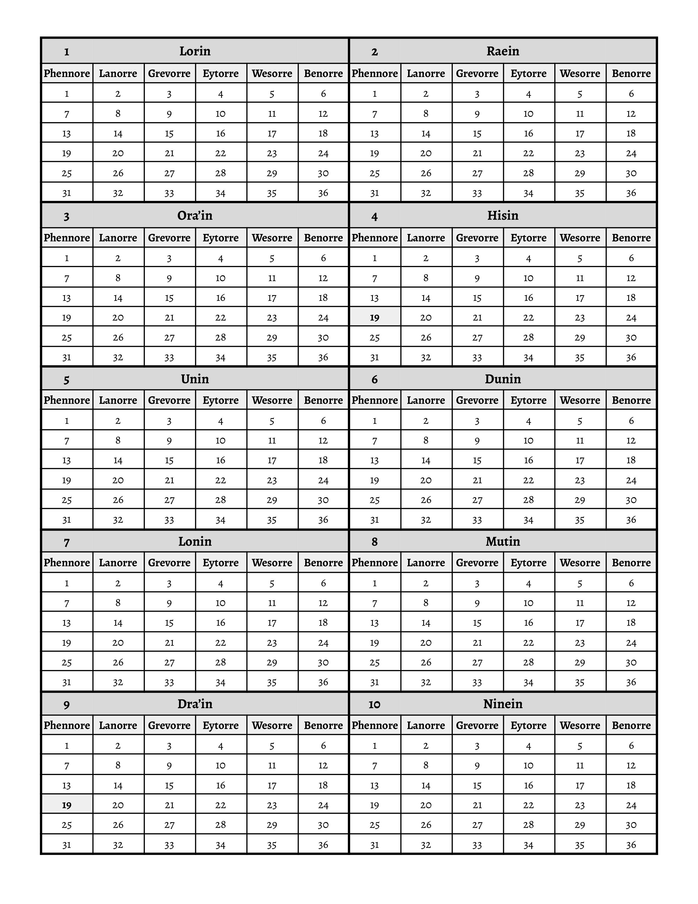

| NPC Names | Description |
|---|---|
| Archie | Archie runs his Alchemy Depo which has been in buisness for a very long time. Archie himself is a very old dwarf that is short tempered and short in general. The party has retrieved stolen items for him and regularlly goes into his Depo to buy supplies for other adventures. |
| Jean | Jean was a homeless man that was sitting outside of Archies Alchemy Depo. Lizee hired Jean to sell some items for her in order for him to get back on his feet. He currently sells the items at a homemade stand. In the future he wants to be a painter and join the painter's guild. |
| Luzo | Luzo is a dragon first found underground being chased by three men. He saved the party so in turn Ogan removed poison from him to save him. His goal is to bring light to the underground, physically and metaphorically. He now stays in the forest with Ogan, Nahran, and Lizee. |
| Ritsko | While on a mission, the party broke into Ritsko's home to try to steal a prototype. Ritsko outpowered everyone and then gave us a choice: kill us or put us on retainer. Ritsko can contact us and we need to drop everything and help them as reperations. |
| Minus Constantine Dean of Natural Studies and Natural Arcanum | Minus is a Dean at the Consortia Arcanum. This university is in the Vangaurd region of the Ryboure Erathis' Band. He is an earth genasi that is proficient in geomancy (he can move rocks like playdough). He is also the party's main informant for the newest Big Bad, Headmaster Arch Mage Marcine. He is an ally of sorts for the party. |
| Headmaster Arch Mage Marcine | Marcine is the Headmaster for the Consortia Arcanum. She used to specialize in living transmutation before a disastrous expirement happened and drained her magical abilities. The party believes that she has been hunting us and trying to kill us through hemomancy (blood magic). We were told that we need to put an end to her by finding proof of her wrong doings and attempted murders. |
| Mythdran Cauldic | Mythdran is a student at the Consortia Arcanum. The party met him in the underground studying magical flora. Nahran immediately liked him and now they write letters to each other, but they have not written back in some time. He studies enchantment enhanced flora and one of his professors is Lillia Vreth. |
Currently, it is Lonin 11, 1120.
